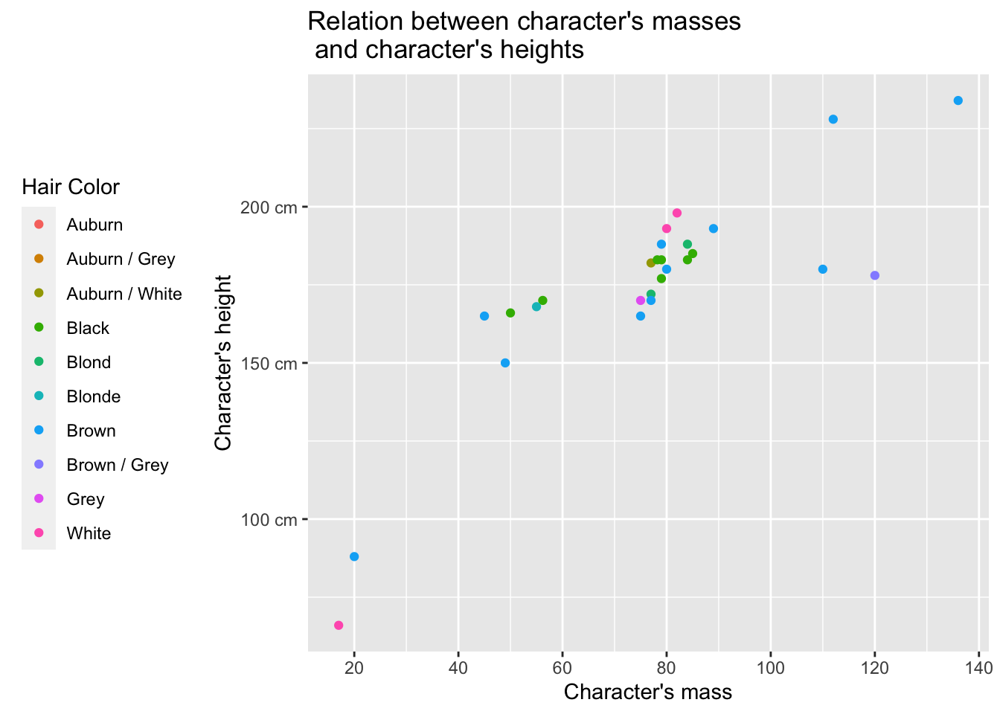
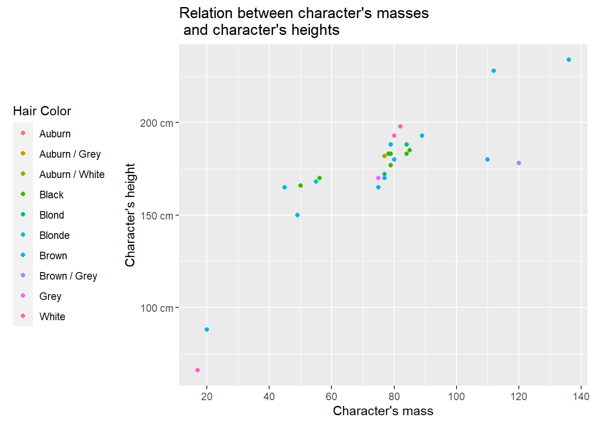
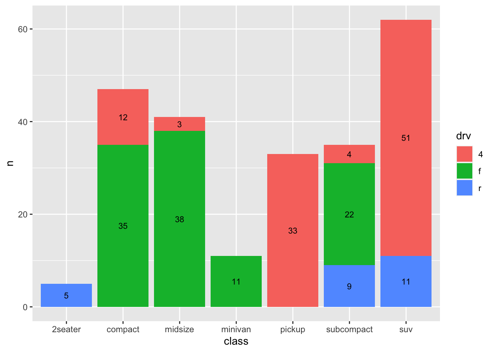
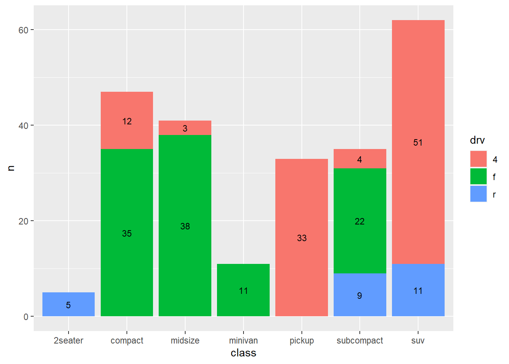
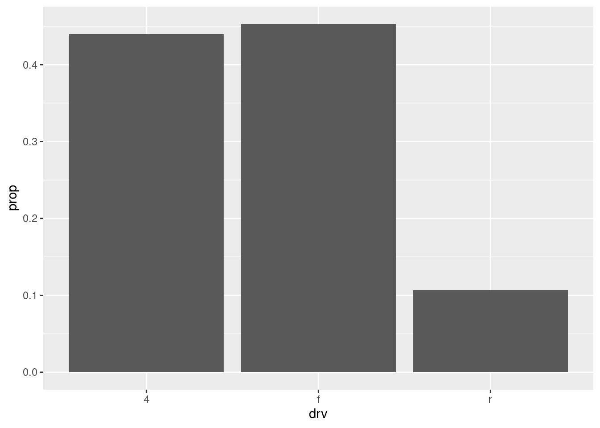

Exercice 1
Tous les tracés sont composés de données que vous souhaitez visualiser et d’un ensemble d’éléments esthétiques :
des données que vous souhaitez visualiser et d’un ensemble de mappings esthétiques décrivant la façon dont les variables des données sont mises en correspondance avec les données. esthétiques décrivant comment les variables des données sont mises en correspondance avec Les attributs esthétiques que vous pouvez percevoir.
Des couches composées d’éléments géométriques et de transformations statistiques. statistiques. Les objets géométriques, géomes en abrégé, représentent ce que vous voyez réellement sur le graphique : points, lignes, polygones, etc. Les transformations statistiques, ou stats en abrégé, résument les données de nombreuses de nombreuses façons utiles. Par exemple, le regroupement et le comptage des observations pour pour créer un histogramme, ou résumer une relation à 2d avec un modèle linéaire.
Les échelles transforment les valeurs de l’espace de données en valeurs dans un espace esthétique, qu’il s’agisse de la couleur, de l’eau ou de l’air. espace esthétique, qu’il s’agisse de la couleur, de la taille ou de la forme. Les échelles dessinent une légende ou des axes, qui fournissent une cartographie inverse permettant de de lire les valeurs des données originales sur le graphique.
Un système de coordonnées, coord en abrégé, décrit la façon dont les coordonnées des données dans le plan du graphique. Il fournit également axes et des lignes de quadrillage pour permettre la lecture du graphique. Nous Nous utilisons normalement un système de coordonnées cartésiennes, mais il en existe d’autres, notamment les coordonnées polaires et les cartes. sont disponibles, y compris les coordonnées polaires et les projections cartographiques.
Une faceting specification décrit comment décomposer les données en sous-ensembles et comment afficher ces sous-ensembles en fonction de la taille de l’échantillon. sous-ensembles et comment afficher ces sous-ensembles sous forme de petits multiples. C’est ce qu’on appelle également connu sous le nom de conditionnement ou de latticage/treillis.
Un thème qui contrôle les points essentiels de l’affichage, comme la taille de la police et la couleur de fond. la taille de la police et la couleur de fond. Bien que les valeurs par défaut de ggplot2 aient été ont été choisies avec soin, il se peut que vous deviez consulter d’autres références pour créer un graphique attrayant. pour créer un graphique attrayant.
Exercise 1
“Pour les exercices suivants, nous utiliserons l’ensemble de données starwars du package dplyr. Le graphique de base sur lequel nous travaillerons est celui des variables name, mass, height et hair_color. Tracez-le en utilisant la fonction geom_point().
Comment pouvons-nous améliorer sa lisibilité ?”
Nous pourrions même marquer de manière distincte les NAs ! Il suffit de définir la couleur des NAs avec l’argument dans la fonction scale* appropriée. Dans notre cas, scale_fill_discrete(na.value = "nom_de_la_couleur").

Nous pouvons utiliser d’autres fonctions dans nos graphiques, chacune avec ses esthétiques correspondantes pour contrôler la manière dont les données sont représentées. Les principales sont :
pour les graphiques de dispersion :
geom_point();pour les graphiques en courbes :
geom_line(): relie les points de données en produisant des lignes de gauche à droite.geom_path: relie les points de données dans l’ordre où ils apparaissent, résultant en un trajet non linéaire.
pour les graphiques à barres et les histogrammes :
geom_bar();pour les histogrammes :
geom_histogram();pour les boîtes à moustaches :
geom_boxplot(); pour les cartes thermiques :geom_tile();pour les polygones et les formes remplies :
gom_polygon().Enfin, nous pouvons ajouter des étiquettes de texte à un graphique avec la fonction
geom_text(). Voici ses principales esthétiques :label,color,size,angle,hjust,vjust. De plus, pour éviter les chevauchements, nous pouvons utiliser l’argumentgom_text(check_overlap = TRUE, , vjust = "inward", hjust = "inward")à l’intérieur de la fonctiongeom_text().
Exercise 2
Au lieu de représenter les observations avec des points, représentez-les avec le nom du personnage auquel elles se réfèrent. Utilisez la fonction geom_text avec les arguments suivants check_overlap = TRUE, vjust = "inward", hjust = "inward" au lieu de geom_point.

La plupart de ces fonctions partagent les mêmes esthétiques. Les modifier peut améliorer la lisibilité du graphique. Les plus importantes sont :
color: utilisé pour attribuer des couleurs aux points de données, aux lignes ou à d’autres éléments du graphique en fonction d’une variable ;fill: utilisé pour spécifier la couleur de remplissage des formes, telles que les barres, les zones ou les polygones ;size: utilisé pour ajuster la taille des éléments de votre graphique, tels que les points ou les lignes. Il n’est pas recommandé d’utiliser la taille pour une variable discrète ;alpha: utilisé pour contrôler la transparence ou l’opacité des éléments du graphique. Des valeurs plus élevées rendent les éléments plus opaques, tandis que des valeurs plus basses les rendent plus transparents ;shape: utilisé pour attribuer différentes formes de point aux points de données. Veuillez noter que ggplot2 n’utilisera que six formes à la fois ;stroke: pour définir la couleur de la bordure ou du contour des formes ;linetype: utilisé pour contrôler le type de ligne dans les graphiques en ligne, tels que des lignes continues, des lignes en pointillés ou des lignes en pointillés ;group: utilisé pour regrouper les points de données pour certaines géométries, commegeom_line(), qui connecte les points dans le même groupe ;label: utilisé pour spécifier les étiquettes de texte associées aux points de données. Généralement utilisé avecgeom_text()ougeom_label()pour afficher des étiquettes pour les points de données ;hjustetvjust: utilisés respectivement pour le justifié horizontal et vertical des étiquettes de texte par rapport à la position spécifiée ; pour ajouter des points étiquetés à un graphique avec un arrière-plan coloré :geom_label();pour ajouter un lissage aux données et afficher le lissage ainsi que son erreur standard :
geom_smooth.
Design du graphique
Titre, legende, geom and axes
Exercise 3
En travaillant sur le graphique de l’exercice 1, ajoutez-lui un titre de votre choix, un titre pour les axes des x et y, ainsi qu’un titre pour la légende. Vous pouvez le faire avec la fonction labs() et les arguments suivants : title = "votre_titre" pour le titre ; x = "nom_de_l'axe_x" ; y = "nom_de_l'axe_y" ; color = "titre de la légende" pour le titre de votre légende.
Si le titre de votre graphique est trop long, envisagez de le diviser en deux lignes avec l’argument entre les deux parties du titre, comme suit : title = "Relation entre les masses des personnages \n et les hauteurs des personnages".`
De plus, envisagez d’éliminer les valeurs étranges contenues dans la variable hair_color à l’aide du code suivant : filter(hair_color %in% c("auburn", "auburn, grey", "auburn, white", "black", "blond", "blonde", "brown", "brown, grey", "grey", "white")).
Enfin, placez la légende à gauche et modifiez les noms affichés des valeurs dans la légende. Vous pouvez utiliser les fonctions et arguments suivants: theme.position = "left") ; scale_color_discrete(labels = c("auburn" = "Auburn","auburn, grey" = "Auburn / Grey","auburn, white" = "Auburn / White","black" = "Black","blond" = "Blond","blonde" = "Blonde","brown" = "Brown","brown, grey" = "Brown / Grey","grey" = "Grey","white" = "White")).

Qu’est-ce qui peut être amélioré sur ce graphique ?
Exercise 4
Créez un nouveau graphique avec la variable mass sur l’axe des x et height sur l’axe des y. Filtrez le poids des observations entre 0 kg et 350, et la hauteur entre 0 et 250 cm. La fonction filter() est votre alliée ici. De plus, ajoutez une ligne de tendance avec son intervalle de confiance et changez la couleur des points de données en bordeaux (#800020). Notez que vous pouvez changer la couleur avec l’argument suivant : color = "nom_de_la_couleur_ou_code_hexadécimal dans la fonction geom_point().

Breaks and Labels
The breaks argument of scale_x_continuous() scale_y_continuous() controls which values appear as tick marks on the plot’s axes.
Excercise 5
À partir du graphique de l’exercice 3, modifiez les valeurs qui apparaîtront sur les axes et dans les légendes. Par exemple, pour l’axe des y, vous pouvez afficher uniquement les valeurs de 100 cm, 150 cm et 200 cm avec le code suivant : scale_y_continuous(breaks = c(100, 150, 200), labels = c("100 cm", "150 cm", "200 cm")).

Faceting
La technique de la facette sert de méthode alternative pour incorporer des variables catégoriques supplémentaires dans un graphique. Cette technique segmente les données en divers sous-ensembles, générant et affichant ensuite un graphique identique pour chacun de ces sous-ensembles, créant ainsi une matrice de graphiques. Cela est particulièrement utile pour les variables catégoriques.
Il existe deux fonctions principales pour la facette. La première est facet_wrap(), qui est généralement utilisée pour facetter un graphique par une seule variable catégorique. À l’intérieur de cette fonction, on trouve l’argument nrow pour contrôler le nombre de lignes et l’argument ncol pour contrôler le nombre de colonnes de la facette. La deuxième est facet_grid(), principalement utilisée pour facetter un graphique par deux valeurs catégoriques. Dans cette dernière fonction, le nombre de colonnes est donné par le nombre de niveaux des variables par lesquelles nous facettisons.
Il est également possible de facetter par une seule variable catégorique avec facet_grid(), mais dans ce cas, nous devons écrire un · pour indiquer qu’aucune facette ne doit être effectuée le long de cet axe. Par exemple, si nous ne voulons pas facetter l’axe x, nous écrirons ce qui suit : facet_grid(· ~ ).
Exercise 6
Pour cet exercice, prenez le graphique de l’exercice 3, mais ajoutez la variable gender et n’utilisez pas l’argument color dans la fonction aes(), et ne recourez pas aux fonctions theme() et scale_color_discrete(). Sur ce nouveau graphique, vous devez le facetter par la variable hair_color en utilisant la fonction facet_wrap(). Vous pouvez facetter avec la fonction suivante : facet_wrap(~ hair_color, nrow = 3).

Ensuite, vous pouvez essayer de facetter un graphique par deux variables catégoriques. Nous le ferons avec la fonction facet_grid(), en spécifiant les deux variables à l’intérieur de la fonction de la manière suivante : facet_grid(gender ~ hair_color).

Exercise 7
Avant d’ajouter des lignes, nous devons calculer l’endroit où ces lignes doivent être placées. Ensuite, avec la fonction geom_vline(), nous ajouterons la ligne souhaitée.n with the function geom_vline() we will add the desired line.

Un problème courant lors de la facette est que, pour certaines observations, les axes ne sont pas les plus adaptés pour lire correctement le graphique. Pour cette raison, nous pouvons utiliser l’argument scales = "free" de la fonction facet_grid().
Un autre problème possible que nous pouvons rencontrer lors de la facette est lorsque les étiquettes de facette (les catégories de la variable que nous utilisons pour facetter) sont si longues qu’elles sont coupées. Pour remédier à cela, nous pouvons utiliser l’argument labeller de la fonction facet_grid() de la manière suivante : labeller = labeller(nom_variable = label_wrap_gen(width = 25)).
Colour of the background
Exercise 8
Sur le graphique de votre choix, changez la couleur de l’arrière-plan avec le code panel.background = element_rect(fill = "lightblue", colour = "red", linewidth = 2).

Annotation
Exemple d’annotation
(copié et collé de (https://ggplot2.tidyverse.org/articles/faq-annotation.html))


